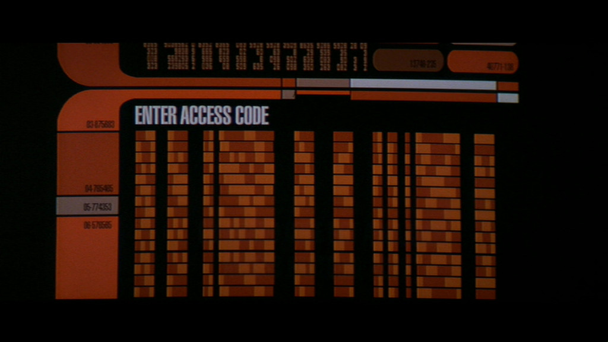
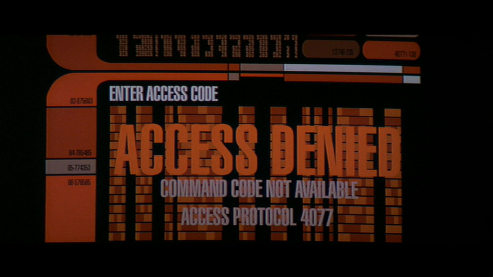
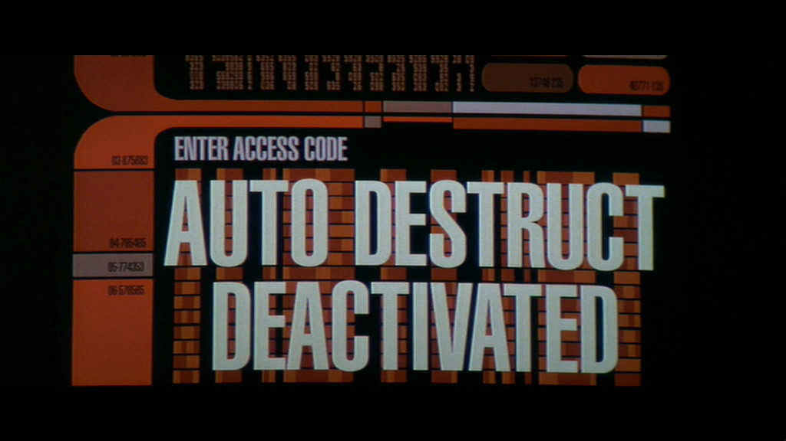
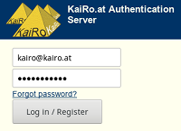
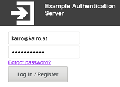

Table of Contents
Web Logins after Persona
The following slides are available in this presentation:
Web Logins after Persona
How I solved logins on my small websites
Robert Kaiser,
"KaiRo" <kairo@kairo.at>
Mozilla Rep
Mozilla Rep
Slides: https://slides.kairo.at/fosdem2017/
- Created for Mozilla Developer Room at FOSDEM 2017 in Brussels.
- Written in HTML 5 with CSS 3 and JavaScript.
- Navigation via links on all slides, via access keys (e.g. "n"/Alt+Shift+N for "next") or back/forward arrow keys
- Contents
 01/2017 Robert Kaiser.
01/2017 Robert Kaiser.
What iswas Persona?
Login/Identity solution by Mozilla, 2011-2016
- Decentralized / Federated (with Fallback)
- Multiple identities
- Verified Email
- Potential for browser integration
- BrowserID protocol, easy to implement, server-side verification
- Permission-less
Needs of a Small Website

- Easy to implement
- Trusted identification
- Avoid dealing with how to secure passwords
- No lock-in (identification via email?)
- Privacy (not telling every login attempt to a big company)
Local vs. External Login

- Local: Need to secure passwords
- Local: Sounds easy to implement, complications in details
- Local: Can always be trusted
- External: Potential for lock-in
- External: Potential privacy issues
- External: Implementation difficulty depends on API
External Alternatives
Mozilla PersonaFirefox Accounts- Facebook, Google, GitHub, ...
- Other OAuth2 providers
- OpenID Connect (OIDC) providers (based on OAuth2)
- Other/older providers/standards (OAuth1, ...)
- Intermediates, e.g. Auth0
Interlude: A Future Alternative

Portier is a new in-development alternative
- Email authentication
- Decentralized (fallback to passwordless email auth)
- Speaking OIDC to client and "Brokers"
- "Spiritual successor to Mozilla Persona"
- Still in development ("early beta"): portier.github.io
Self-Hosted "External"
- Full control over login stack
- Password security isolated from website code
- Management of multiple identities possible
- Privacy and trust are no issues
- When using standard API, possibility for being switched out later
- Still needing to secure properly
The PHP Authserver

- OAuth2 API (potential extension to OIDC later), using oauth2-server-php
- Password storage with password_hash (currently bcrypt) + nonce, auto-upgrade on login
- Relatively easy to install on Linux with Apache + PHP5/PHP7 + MySQL (Other DBs should be easy to support)
- Doctrine DBAL for DB abstraction, php-utility-classes for email and DOM document abstraction
- Skinnable to brand installation to fit operator
- My installation at auth.kairo.at scores A+ from Mozilla Observatory
Current Status
- Only Authorization Code flow supported right now, oauth2-server-php can do Client Credentials as well as OIDC, should not be too hard to add.
- Tested with Apache and MySQL for now, other web and DB servers should be possible easily.
- Rudimentary documentation exists in the main README.
- Languages supported are US English (default) and German, detected via Accept-Language sent by browser.
- Testing is done by running logins with KaiRo's websites (2 different client implementations).
- Open Source at github.com/KaiRo-at/authserver, under MPL2 - released TODAY!
Help Needed

- Implementation of OIDC and perhaps Client Credentials flows.
- Setting up a test suite and infrastructure.
- Writing more complete documentation.
- More languages?
- More installations?
- Your ideas and pull requests!